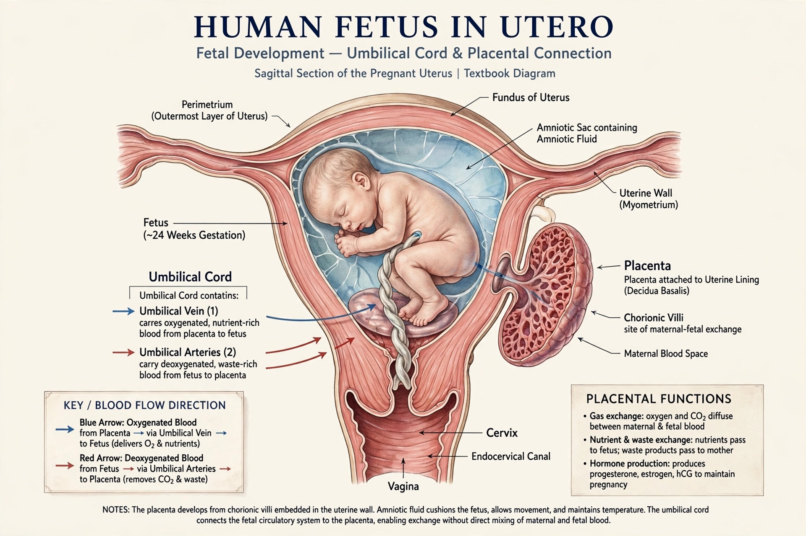

| Fetus | |
|---|---|
| Stage begins | 9th week after fertilization (11th week of gestation) |
| Preceded by | Embryo |
| Followed by | Newborn (birth) |
| Support system | Placenta and umbilical cord |

A fetus or foetus is the unborn offspring that develops from an animal embryo. Following embryonic development the fetal stage of development takes place. In human prenatal development, fetal development begins from the ninth week after fertilization (or the eleventh week of gestational age) and continues until birth.
At the start of the fetal stage, the fetus is about 30 millimetres in length and weighs about 8 grams; all major organs have begun to form during the embryonic stage, and the fetal period is primarily one of growth and maturation. The circulatory system functions through the placenta, which exchanges oxygen, nutrients and waste between fetus and mother via the umbilical cord. By the end of the second trimester the fetus may reach viability — the ability to survive outside the uterus — which improves steadily with gestational age.
The fetus receives all nutrition from the mother through the placenta. Factors such as maternal alcohol consumption, smoking, certain infections and medications can affect fetal development (teratogens), which is why prenatal care includes screening and supplementation such as folic acid to prevent neural tube defects.
See also: Embryo · Pregnancy · Placenta · Prenatal development